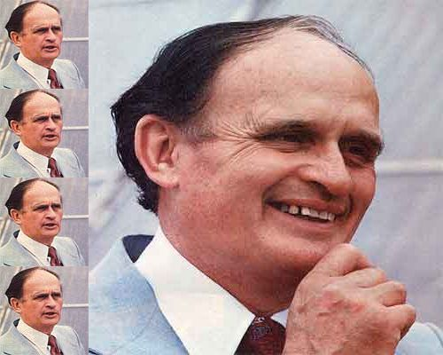
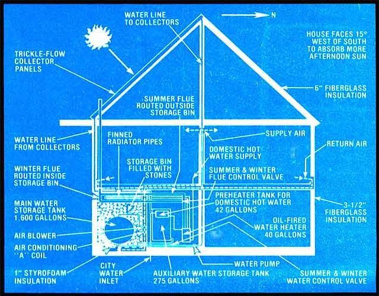

Twenty-three years ago, in the heart of North Carolina farm country, a young United States Patent Office examiner found himself caught in a summer thundershower. Surprisingly enough, that experience caused the man to make an accidental discovery that has influenced the development of solar home design.
The gentleman was Harry Thomason . . . and-although his name might be unfamiliar to some-he is, in fact, one of the bona fide pioneers of solar energy. You see, ever since that summer day over two decades ago, Dr. Thomason (who holds the degree of Juris Doctor and an honorary doctorate in science) has dedicated himself to the development of practical, affordable solar energy systems.
For example, Harry built-and moved his family into-his own first sun-heated house in 1959. The fuel bill for the initial winter season totaled a very satisfying (to the home's designer especially) $4.65. Since that time, he has built four other solar homes himself... and, through his licensing program, hundreds of other dwellings using his sun-power system have been constructed. Every one of them has performed remarkably well.
But, as Dr. Thomason emphatically points out, performance is only part of the story. After all, given enough funding, just about anyone should be able to build a solar energy system that works. The problem is to build one that people can afford . . . and that is financially attractive to building contractors as well.
It is toward this goal that Harry Thomason has been fighting for the past 23 years . . . and, although a few battles have been won (the U.S. Department of Energy, working jointly with George Washington University, has recently published a report of performance data on one of Thomason's houses), the war still rages on . . . because until the public realizes that solar heat-at a cost no greater than that of conventional thermal control-is no longer a dream but a reality, the Thomason system will continue to remain more of a "secret" than an accepted fact of life.
But exactly who is Dr. Harry Thomason, anyway! How is it that this man-who holds more patents in the field of solar energy than anyone else in the world (he's had nearly three dozen granted to date, covering almost 40 inventions)- has just recently come into the public eye? Why weren't his ideas acted upon 20 years ago?. How can he possibly install a solar heating setup-and an active one at that-for the same cost as a conventional unit? Exactly how well does his "Solaris" system work?
To obtain answers to these and other questions, MOTHER sent staffer Richard Freudenberger to Fort Washington, Maryland . . . to speak with Dr. Thomason in his present home, Solaris No. 5. The following exchange-which has been edited from over eight hours of conversation-took place during the course of that interview.
PLOWBOY: Dr. Thomason, I realize that you are truly one of the "fathers" of practical solar power . . . with over 23 years of experience under your belt. But I also understand that you weren't always inclined toward alternative forms of energy, that your introduction to the concept of using the sun's heat was unique. Could you describe that event ?
THOMASON: Certainly. I was visiting my wife's family home near Burlington, North Carolina back in the summer of 1956, and-as I was out walking-one of those summer showers suddenly blew up. I ran for cover beneath a rusty old tin barn roof and, as I passed under that overhang, the rain falling from it actually felt warm . . . markedly more so than did the water from the downpour. At that moment I realized that the dark, rusty roof was a solar heat collector . . . and that something similiar to it could be put to use.
PLOWBOY: And so you just followed through with your discovery then and there.
THOMASON: Well no, not exactly. You see, I was working for the U.S. Patent Office at the time and attending law school at night. I wanted to do more with the solar collector idea, but-besides the fact that I was obviously short of time-I couldn't have applied for a patent to protect my efforts, since Patent Office employees are prohibited from personally applying for such "invention protection". So to make a long story short . . . I quit my job, started working for the Army Signal Corps, and devoted my evenings and weekends to designing and building a solar heating system which I later patented.
PLOWBOY: I assume that you had some practical knowledge in construction be fore you tackled the job . . . was this experience gained in the course of your work with the Patent Office, or had you done hands-on building in earlier years?
THOMASON: Let's see ... I'd better start at the beginning. I was born in 1923 in Salisbury, North Carolina and graduated from Woodheath High School. After that I attended Catawba College at Salisbury for three years . . . until I joined the United States Merchant Marine. While in the service I was a machinist and a refrigeration engineer . . . among other things. Believe me, I got plenty of practical experience during those years. After the war, I went back to Catawba College, finished my final semester there in 1947, and began working as a Patent Examiner later that same year.
I spent 10 years with the Patent Office. During that stint, I built houses for rental income in my spare time. You can see that I was no babe in the woods in terms of my construction or mechanical experience . . . in fact, you might say that developing my own solar energy system was just an extension of the kind of work I'd been doing all along.
PLOWBOY: I see. So when did you actually build your first sun-heated house?
THOMASON: Well, we completed the house-which, incidentally, we call Solaris No. 1-in 1959. But I had been working on collectors and flow systems for some time before that, and actually applied for my first patent in '58. I moved my family into that three-bedroom house just before the winter of 1959 hit, and we lived there until 1962.
PLOWBOY: So I take it your first attempt at solar heating was successful . . . for three years, at least!
THOMASON: I'll let you decide that: Our first heat bill came to $4.65 . . . we used only 31 gallons of oil for backup heat during the entire winter. When we finally left to move into Solaris No. 3, the total fuel bill for three winters of residence stood at $18.90. The house was never chilly, nor did we suffer any interruption of heating service. And by the way, that house is still in operation today, receiving the majority of its heat from the sun, and having undergone only minor routine maintenance and repair. In fact, I see no reason why it shouldn't be going strong . . . after a quarter of a century.
PLOWBOY: That's remarkable . . . but what about the initial cost of the system itself? Wasn't it prohibitive?
THOMASON: The cost of those original Solaris collectors was only about a dollar a square foot, including installation. The total system cost in the neighborhood of $2,500 . . . and that included backup heat, domestic hot water, installation, and even air conditioning. No, I wouldn't say that the cost was prohibitive.
PLOWBOY: I'd have to agree with you. But many things have changed since 1959 . . . I know the dollar-a-square-foot cost breakdown doesn't hold true anymore. What about the system itself . . . has it undergone modifications over the years?
THOMASON: Oh my heavens, yes. My son Jack-who holds a degree in mechanical engineering-and I are constantly seeking to improve the system. In 1976, for example, we patented a unique "trickle-flow" collector panel, and many other design features have been added or altered over the years . . . both to reduce costs and to improve the overall efficiency of the Solaris method.
PLOWBOY: I assume that the "trickle-flow" panel is so named because you utilize running water as a heat-collecting medium. But just how is your system different from any other active hot-water collection system?
THOMASON: That difference is going to require some explanation . . . I'll run through the basics of our Solaris setup so you can get an idea of exactly what we're talking about.
First, we have our collector panel . . . which is really nothing more than a sheet of heavy-gauge corrugated aluminum, coated black, backed with insulation, and mounted in a frame. A single layer of glass covers the aluminum. At the top of the panel a manifold pipe feeds water -at a trickle-onto the black metal sheet, and the liquid then runs down that solar-heated surface into a gutter. The collector heats up a lot of hot water that we've got to store in a hurry, so we pipe it into two steel tanks in the basement . . . one with a 275-gallon capacity and the main one, which holds 1,600 gallons.
PLOWBOY: And from there you pump it through a hot-water baseboard system?
THOMASON: No . . . and that's where we differ from many other systems. I'm sure you realize that-in order to get satisfactory heating in the winter months-water temperature in a baseboard setup has to be fairly hot . . . and has to be kept hot constantly to maintain a comfortable climate in the house. If a cloudy spell should set in, it wouldn't be long before the backup system would have to come on to maintain temperature.
With the Solaris system, though, we set the main hot water storage tank in a cinder-block bin and fill the bin-around the tank-with stones. Then the heated water warms the rocks, which heat the air in the bin, and we blow this warm air throughout the house . . . at a temperature of perhaps 75° at the highest. Of course, it's not difficult to maintain a temperature that low . . . in fact, our system is efficient because it operates, at low heat: The water coming off the collectors might only reach 100° to 125°F in the dead of winter . . . compared to the perhaps 160°F which is common in many closed-loop liquid systems.
PLOWBOY: Speaking of winter, what do you use to prevent freeze-up?
THOMASON: Nothing . . . we don't need antifreeze. Our collectors are of an open flow design, and there are no exterior pipes to freeze. Besides that, the water is always kept moving, and it's always warm.
PLOWBOY: OK, so what do you use for backup heating. if you need it . . . a hot air furnace?
THOMASON: No, we've eliminated the need for a furnace by using the home's standard 40-gallon oil-fired domestic water heater as an auxiliary heat source. We can circulate its hot water-when necessary-through a series of finned copper tubes . . . positioned in the crawl space between the rocks and the top of the storage bin. Additionally, we route the heater's flue pipe through this air space for extra warmth in the colder months. This arrangement can supply twice as much backup heat as we'll ever need, and at a lower operating cost than that of most furnaces, since the heater uses only 1/2 gallon of fuel per hour . . . when it's running, that is.
PLOWBOY: Aha! But you still need that oil to warm your domestic hot water.
THOMASON: Yes, but we only consume an inconsequential amount. Inside the smaller storage tank-mounted up near the top where the water's the hottest-we have another 42-gallon tank . . . which is plumbed into the water heater and fed by the normal outside water source. This system preheats the water that we actually use in our home, so the oil burner merely has to give the liquid a bit of thermal "boost".
PLOWBOY: So far, the Solaris system sounds fine for the winter, but what about the summer . . . how does your design take care of cooling a home?
THOMASON: Our system simply uses a fairly inexpensive 24,000-Btu air conditioner that's tied into the airflow duct to keep things cool. We only run the unit during the economical off-peak hours . . . in the cool of the night, when it doesn't have to work so hard. This tempered "breeze" dehumidifies the air and cools the stones and the tank of water in the bin. Then-during the day-we circulate house air through the bin to be cooled and dried.
PLOWBOY: But doesn't the solar heating compete with the air conditioning?
THOMASON: No, because we have the two storage tanks. In the summertime, we only route the hot water from the roof collectors through the smaller, 275-gallon, container . . . which is insulated and separately located from the main tank and rock storage bin. This way, the air conditioning circuit is kept separate from the heating system. By using the dual-tank method, we gain two big advantages: First, we're getting cooling at an absolute minimum of cost . . . since we're carefully scheduling the operation of our air conditioner to coincide with the power company's "slack" hours, and the firm rewards us for that timing with lower rates. Second, we still get domestic hot water virtually free in the summertime, since the sun can provide enough heat to satisfy our needs with very little help from the oil-fired system. So, all factors considered, we have a very favorable economic balance.
PLOWBOY: Then cost is a prime consideration in your solar home equipment?
THOMASON: Absolutely . . . right along with simplicity. The two naturally go hand in hand.
PLOWBOY: So would you say that many of the improvements you've made to your solar designs over two decades were economically oriented?
THOMASON: Most of them were, yes. You see, a Solaris system is so uncomplicated that there's hardly any room for error . . . hence, we didn't make many design blunders. Any technical problems that did show up-and such difficulties were almost all limited to the collectors themselves-have been corrected in our new units, patented in 1976. But even the latest models weren't redesigned purely for durability's sake: We improved their efficiency, too, and-equally important-made it possible to guarantee them against failure, since the new collectors are now factory built . . . whereas the old units were made right on the con, struction site.
In some cases, though, we made design changes-or design decisions-at the expense of short-term economy . . . just to give the units a longer life span. Our aluminum absorbers, for example, are covered with a special preparatory coating . . . which adds to their initial cost. They're also 4-1/2 thousandths of an inch thicker than are "standard" sheets of the same pattern, which tacks an additional 10 cents per square foot onto the cost of the collector. But we feel the added expense is justified, since that extra thickness increases the life expectancy of a panel by 100%. And the coating, we found out later, provides a benefit in addition to the durability we'd bargained for: As the black absorber panel ages, its paint begins to wear off . . . but the shiny aluminum underneath does not appear. What appears is aluminum oxide-formed by the action of the preparatory coating with the water and metal-which is gray in color . . . and which turns black as soon as water hits it. So aging does not necessarily mean a loss of efficiency.
PLOWBOY: But then aren't these new collectors more expensive to manufacture than were your original hand-built units?
THOMASON: On the face of it, yes. The old collectors came to about a dollar a square foot, 1959 prices. The new ones cost about six dollars a square foot, installed. But the new panels-because they're more efficient than the old ones-reduce the number of square feet required on any given house. They're also engineered to cut installation time by as much as 90% over the original units, and
"The message is plain and simple: Reliable, low-cost solar heat is here right now... there's no reason to wait."
they can be installed right over previously shingled roofs . . . and these are both important considerations, especially to a contractor.
PLOWBOY: OK, what other changes have you made to cut costs over the years?
THOMASON: Well, right off the bat I can think of several major revisions that have simplified our system. For one, we've eliminated the need for metal ductwork, which can cost over a thousand dollars in some cases. Our method utilizes channels between the walls and floors for feed and return ventilation. We've also reduced the size of our storage bin-thus cutting construction and materials costs-so now it may occupy only 10% of an average-sized basement's area. Then there's the fact that we've eliminated the motorized damper from our newer systems and-in some installations-done away even with water valves.
Let's see . . . a few years back we also reduced the size of the air conditioning unit by half, cutting initial and operating expenses. And oh yes . . . the new collectors are so lightweight that no extra roof supports are needed when you retrofit. I might also mention that we plumb the feed and return lines into the collectors from the bottom so both installation time and plumbing expense are kept to the minimum.
PLOWBOY: It certainly sounds as if the Solaris system has kept you busy. But tell me, with all this "trimming"-which seems to have decidedly improved the overall performance of your design-what have you actually gained on a cost basis? For example, have you saved as much as 10 percent over the price of a comparable active collection-and-storage setup?
THOMASON: That's a hard question to answer, since there are so many different systems on the market. But let me put it to you this way: I know of no other commercial solar "package" that even comes close to comparing with Solaris on an overall cost basis. Now I'm not just talking about a matter of a few hundred dollars . . . I mean literally thousands in some cases. For example, I know of a firehouse in Kansas City, Missouri that has a solar hot-air system-without air conditioning-which cost more than $125,000 to install. Nearby-in Pittsburg, Kansas-one of our Solaris systems will soon heat and cool a church for only $25,000. We believe Solaris will deliver more solar heat, while servicing a building of roughly the same size . . . and do it for far less money.
PLOWBOY: That sounds like a commercial application to me. What about the cost to an average homeowner?
THOMASON: The same situation applies. I can honestly say that our system can provide performance equal to-or better than-that of any other design available on the market today . . . with less expenditure. Again, the difference in cost will vary, but-just to illustrate my point - there's a Solaris-equipped home near the Wisconsin-Illinois border in which the heating system cost about $7,000. In the same general area, another house uses a solar heat collection and distribution setup that totaled-from what I understand-nearly $20,000!
PLOWBOY: You've got to admit, though, that this is an extreme example. No practical person would spend $20,000 on a climate control system. Couldn't someone build his or her own solar installation for less money than it would cost to utilize Solaris?
THOMASON: Yes, I suppose a person could. Still, there's no guarantee that such a homebuilt system would work as well in practice as it did on paper . . . and finding out could be a costly experiment. But equally important, there are many people who don't want to build their own solar heating systems . . . and probably a lot more who don't want to have anything to do with installing them, either. We can offer a proven package to these folks . . . for a reasonable sum that will be equally attractive to a builder or contractor.
PLOWBOY: So you're not just offering a low-cost system to the individual . . . you're talking to housing developers, too.
THOMASON: We're talking to everyone who has sense enough to listen, and the message is plain and simple: Reliable, low-cost solar heat is here right now . . . there's no reason to wait for technology to improve. Apparently the government isn't about to do much to spread the word, so the burden must fall on the people . . . and that means getting more solar houses constructed, to compete with those that have conventional furnace systems. The best way to do this is to lay the whole ball of wax right in the lap of the nation's builders . . . who, as a whole-though they may not realize it have a hell of a lot of influence on the future of solar home heating.
PLOWBOY: So you're saying, "As the builder goes, so goes the buyer."
THOMASON: Exactly. Imagine, for example, that you're in the market for a suburban home. Suppose, too, that-in your house-hunting travels-you find two similar houses that suit your fancy . . . one with solar heat and one with a conventional system. Now if the solar home is half again as expensive as the other one, no amount of persuasion-low operating cost, short payback period, freedom from pollution, etc. - is going to convince you to buy that house. But if the houses are equal in price-or even close - you'd be foolish not to buy the sunheated dwelling . . . especially with today's uncertainty about "normal" energy supplies.
PLOWBOY: So how does the builder benefit by installing solar systems?
THOMASON: He doesn't, of course, if he chooses an expensive design. On the other hand, if he can provide a system that's competitive in price, equally reliable, and just as easy to install as a conventional furnace system . . . why, he's way ahead, since the solar setup operates at a minimum of cost and will just about sell itself . . . and help sell the home.
PLOWBOY: That brings up another question. The Solaris system might be competitive with other solar installations, but how in the world can it stand up against a furnace setup on a dollar-for-dollar basis? Do you camouflage the price difference by calculating a payback period based on fuel savings?
THOMASON: Absolutely not . . . I don't have to! I'm always hearing about "payback periods" with solar installations, so I've coined a phrase of my own: "Negative Payback Period". In other words, there is no payback period . . . because the Solaris system can be installed at no additional cost!
PLOWBOY: Wait a minute . . . the term "payback period" usually refers to the time it would take for fuel savings to pay for the difference in price between a solar and a conventional system. You're telling me that you can eliminate that difference in initial price? I find that hard to believe.
THOMASON: Most people do . . . but let me explain. First, you don't hear anyone talking "payback" when it comes to conventional systems, because there never is one . . . it's a constant "payout", starting with the initial cost of the unit . . . and believe me, furnaces don't come free. Now, let me run through a couple of sample installations so you can get an idea of what I'm talking about.
In this house right here, the cost for Solaris heating plus the additional air conditioning was $4,968. A conventional system would have cost approximately the same at the time, in 1974.
Now we also have a builder in North Carolina who got three quotations on heating systems before he constructed his house: One was a deluxe heat pump for $5,200, another was a baseboard heating arrangement with air conditioning for $9,200, and the final one was our Solaris-also with air conditioning-for about $7,500. Keep in mind that these are all high-quality units, and the prices are fairly representative of a national average. Right away, you might think that the heat pump would be the best way to go . . . but you'd better think again.
You see, many people don't realize that there's a federal income tax credit-of up to $2,200-available to anyone utilizing a solar energy system to heat a newly built home. In addition, many states offer a substantial direct real estate property tax credit, and some counties grant an additional tax credit on top of that. What's more, many states allow an exemption from state sales tax on the purchase of solar equipment and hardware . . . this alone can mean a saving on materials of 5% or more. So, when you total up all the credits, your "solar" cost is right down with the least expensive of the quality conventional systems . . . without even beginning to count the operational savings.
PLOWBOY: Well, now the economics of your system seems to make sense. But the case you just spoke of concerned a fairly expensive residence. What about those "starter" homes that are available, or any equally low or moderately priced dwelling? Can Solaris compete with "economy" competitors?
THOMASON: Certainly. In New Jersey, for example, one of our licensees-a builder-gave his customers an option on heating systems . . . the homes with conventional units would sell for $33,000 as opposed to $34,000 for those equipped with the Solaris. Of course, once you calculate the tax credits, the solar houses are actually the less expensive of the two choices!
PLOWBOY: You implied that licenses are available to folks who might want to build your homes . . . can you go into more detail about that program?
THOMASON: Yes, we issue licenses to builders in order to maintain the quality of our system. Potential licensees attend one of our training seminars and-if they're accepted into the program-they must sign a two-year contract with us. This guarantees the public that such a firm is reputable. And that "warranty" is good for us and good for the whole solar movement.
PLOWBOY: What does the license authorize the firms to do?
THOMASON: They can handle just about anything they want that's within our patents: A company may choose to manufacture panels or parts, work just with installation and service, or build complete homes using our systems. If a licensed company wants to change the design somewhere, of course, it must consult with us . . . but again, that's just to guarantee quality. If the change is good, we'll approve it.
PLOWBOY: The licensing plan sounds good from your side of the fence, but what does it do for the public?
THOMASON: For one thing, it reduces costs by eliminating the middleman, and -for another-it provides an incentive to get more solar systems built . . . which is good for all of us!
PLOWBOY: Dr. Thomason, I've heard reports that you're something of a fanatic . . . that you have unorthodox ways of getting your message across to people. How do you respond to such criticism?
THOMASON: Well, if my "critics" mean that I'm a fanatic when it comes to promoting solar energy, they may be right. I believe that I have something very important to say, and I'll say it . . . one way or another. I've been bombarding the press and badgering the government for quite a few years now, and I'll continue to do so till the job gets done.
PLOWBOY: What exactly do you mean by "badgering the government"? What has it done to merit the attack of the Thomason gadfly?
THOMASON: It's not what the bureaucrats in Washington have done, it's what they did not do. They didn't publicize their findings on our low-cost system until recently, nor did they tell the entire truth after all the trouble they went to.
PLOWBOY: Do you mean the United States Government actually tested your Solaris system?
THOMASON: Why, they began testing it back in 1962 . . . but it wasn't until February of 1979 that a full report was finally published.
PLOWBOY: I've heard of bureaucracies being slow, but are you saying that it took the government seventeen years to compile one report?
THOMASON: No, there were several different tests made during that period. I'll give you a brief rundown of the events as they took place. In 1962, the federal government hired an engineering consultant to report on the Thomason solar system. The account presented to the FHA, which was sponsoring the study, praised
"The government's spent millions of dollars on tinsel red Rube Goldberg solar contraptions that don't work."
the system highly. Yet, for 10 full years, the government did nothing with the results, of that test. Then, in 1972, the University of Pennsylvania submitted a proposal to HUD to test the system. They never got funding, despite the fact that an official of HUD supported the proposal. Two more years went by. In 1974, both Colorado State University and George Washington University asked to test the efficiency of my Solaris system. After over a year of delay, we were informed that the GWU proposal was considered dead. I was amazed . . . here was an apparently qualified organization offering to test an existing, built-and-paid-for, low-cost solar energy system and all it got was the cold shoulder. Yet the government continued to spend-and waste -literally millions of taxpayer dollars building and testing expensive, unproven apparatus!
PLOWBOY: But you obviously didn't take that decision lying down ....
THOMASON: I did not! We visited congressmen, senators, the Vice President . . . we even went to the White House. Eventually, as the result of a lot of persuasion, George Washington University was granted $189,000 to test and report on -in conjunction with the United States Department of Energy-the Thomason Solaris system.
PLOWBOY: And when did the study actually begin?
THOMASON: Preliminary work started in the spring of 1976 . . . but no actual data were recorded until November of that year. The test took place near Washington, D.C. in Solaris No. 6, the identical twin of the house you're now in.
PLOWBOY: Did the DOE keep you informed of the progress of the study?
THOMASON: They did not. In fact, they kept the findings from us until September 1977 . . . some time after they had finished the winter part of the study. When the rough report was presented to us, we saw why it had been delayed: The study was totally unacceptable, and the DOE was undoubtedly embarrassed by it. Test figures were incomplete, many data were incorrect or missing entirely . . . in short, the report was not nearly worth $189,000 of the taxpayers' money. We insisted on results more proportionate to the public's expenditure.
PLOWBOY: So when did you finally see a "new improved" version?
THOMASON: Many months later ... about the same time that my attorney and I demanded-under the Freedom of Information Act-that the full test study be supplied to us. We actually received the new report on May 8, 1978.
PLOWBOY: And was that a satisfactory report?
THOMASON: Just barely. The study did prove that the system would provide from 59 to 72% of the home's heating needs, and documented the fact that it only cost $4,368 . . . with an additional $600 for air conditioning.
PLOWBOY: Were there any other tests made on your system?
THOMASON: Yes. the DOE and the University of Virginia-under a $66,000 federal grant-tested our earliest panel collectors for two years. They found them to compare favorably with the higher-technology-and higher-cost-flat plate collectors. Also, the Department of Agriculture tested the new units in Maryland. They operated them right next to another set of solar collectors costing almost three times as much. The Solaris systems produced almost the same amount of heat as did the expensive units.
PLOWBOY: So what you're really saying is that the federal government definitely has all the "proof" it needs to go ahead with a full-scale, nationwide effort to promote low-cost solar energy . . . or at least make the sun power option more attractive to the public?
THOMASON: Yes, exactly . . . the least that government agencies could do is simply tell the truth about it. One thing that particularly bothers me, though, is that the solar energy tax incentives-although a step in the right direction-only apply to the first owner of a house. There should be an amendment to that law which would allow a new resident, or a landlord, to retrofit his or her building and get a full or partial tax credit for doing so. I think many homeowners would look to solar energy today if such a credit were offered.
PLOWBOY: But it would take some convincing to get an amendment like that approved. After all, the changed law would apply to literally millions of people across the country.
THOMASON: Sure it would . . . and that's exactly the kind of exposure we need. Right now, the United States only has a handful of legislators who are honestly in support of a drastic change in the government's attitude toward solar energy. On the other hand, though, we have the Solar Lobby right here in Washington, and also the benefit of generally favorable media coverage. All we're asking is that the public be given half a chance to try solar . . . to be exposed to it.
Tax incentives across the board-or possibly long-term, low-interest loans to consumers of solar equipment-would do a lot to help people of low and middle income make use of the sun's "free" energy. And the same type of program would completely avoid the problem of solar welfare.
PLOWBOY: What do you mean by "solar welfare"?
THOMASON: Simply giving the taxpayers' money away to finance experiments with all manner of unnecessarily fancy solar hardware. Pouring money down a rathole, so to speak . . . that's what the government has done, and I've been speaking out against this practice for years. Our tax dollars should not be used to subsidize such gold-plated contraptions to the hilt. If the government's going to subsidize the solar products industry at all, it should give an equal amount of aid to all comers-a sensible amount-and let the designers use their ingenuity to apply those funds in a practical way.
PLOWBOY: And if the costs exceed the funding?
THOMASON: Let the builders and designers pay for it! That's a sure way to keep a check on the extravagance that's rife in the solar industry today. Sure, let 'em spend $20,000 on a system if they want to . . . but the guy who's smart enough to build a setup for $5,000 will come out ahead. For example, it's not unusual for HUD and the Department of Energy to allocate $15,000 to be put into one system, since this figure has been assumed to equal the "incremental" expense over and above that of a conventional installation costing perhaps $5,000. Now that means, in simple terms, that HUD or DOE will spend $15,000 on one guy and one system . . . which in many cases doesn't work anyway. Had the agencies, on the other hand, taken the same amount and distributed it to people building $5,000 solar units, we'd have as many
"I've coined thephrase "Negative Payback Period" . . . because with the Solaris solar system there is no payback period!"
as three systems operating and as many as three families saving three times as much oil . . . and a lot less money going overseas for foreign petroleum supplies.
PLOWBOY: Plus, you'd have that many more people "advertising" the fact that low-cost solar heating is available, and that this energy alternative does work.
THOMASON: Exactly. The real shame is, though, that we're not just talking about $15,000. Since 1974, the government has put untold millions of dollars into various solar projects. If they'd taken that money and given, say, $2,000 to each person who wanted to build a solar house . . . there'd be more than half a million solarheated homes in existence today.
PLOWBOY: But hasn't the government spent money on your own projects?
THOMASON: They've spent perhaps a quarter of a million dollars testing our equipment, not building it. I've never received-nor have I asked for-one red cent from our government for my solar research or development. My feeling is this: If a product is worth selling, why should it need help? If it can fly, it'll fly on its own.
PLOWBOY: More and more people seem to be wondering just why the government spends so much money and gets back so little for it. Having been in the civil service yourself, maybe you can shed some light on that question.
THOMASON: Well, first of all, let me say that a bureaucracy typically requires a lot of capital for its own operation. In fact, even the most efficient government operation can't give away 10 million dollars without spending half of that sum to sustain itself. It takes officers, proposals, people to analyze those proposals, monitoring personnel, follow-up studies, report writers, public information officers, and so forth. That's why the wholesale spending spree that's been going on in various government agencies for the past half-decade hasn't turned up much in the way of good solid results. It's a vicious circle that fails to bring many attempted projects to fruition ... and wastes money in the process.
PLOWBOY: And that's why you're in favor of spreading the funds out thinly . . . through tax incentives or whatever.
THOMASON: Precisely. Now it's true that there will be those unscrupulous individuals who'll figure out a way to cheat on their income taxes by using the incentive, but they couldn't possibly embezzle as much as the government wastes or spends on itself.
PLOWBOY: But even given the bureaucracy, doesn't it seem strange that the various federal agencies didn't eventually see how they were squandering federal funds . . . and that low-cost alternatives were already available?
THOMASON: Well, I guess the government had to go the spendthrift route . . . the bureaucrats had to discover all the negatives first, as I see it. And that's exactly what they've done. They've taken hundreds of millions of dollars of the taxpayers' money and used it for all kinds of star-spangled, tinsel-covered Rube Goldberg contraptions . . . devices that cost Lord-knows-how-much and don't work anyway.
PLOWBOY: Now that the truth is out, so to speak, do you feel that-even though its experiments in solar technology were little more than wasted money-the federal government has at least done a good job trying to promote solar energy?
THOMASON: The federal government has probably done more harm than good in the solar energy field. While it's true that-without governmental involvement-the public eye would not be focused on the solar alternative as it is today, I can think of very few practical results of the wholesale spending that's gone on in the past five years or so. What's worse, the bureaucrats only told half the truth, glossing over the core of the matter . . . which is that a working solar system doesn't have to be any more expensive than conventional heating.
PLOWBOY: And do you think the government will correct that omission as time goes on?
THOMASON: Yes, I think they'll have to. There's no question that our nation needs solar energy, and I feel the government will now do an about-face and march boldly in the opposite direction . . . to publicize inexpensive solar technologies widely and strongly. But the shame of it is that-if the bureaucracy had done its job years ago-we'd have many more people living in, and enjoying, solar homes today.
|
 |
 |
|